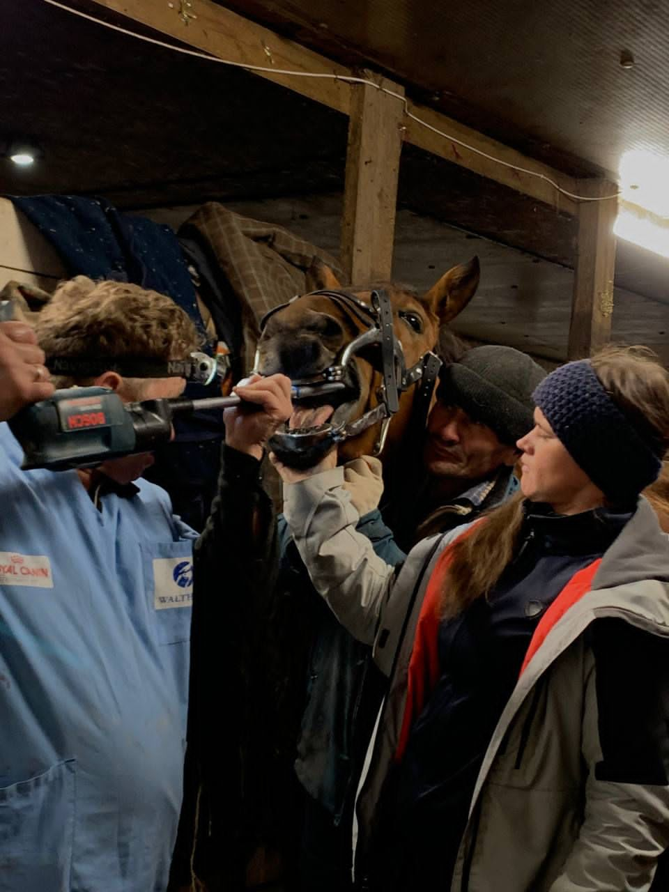

- 1. Nutrition: Provide a balanced diet with hay, grains, and fresh water. Consult a vet for specific dietary needs.
- 2. Exercise: Horses need regular exercise, including riding, walking, or turnout in a pasture.
- 3. Grooming: Brush your horse daily to keep their coat clean and healthy. Clean hooves and check for injuries regularly.
- 4. Health: Schedule regular check-ups with a vet and ensure vaccinations and deworming are up to date.
- 5. Shelter: Provide a safe and comfortable shelter from the elements, with enough space to move around.
- 6. Socialization: Horses are social animals. Let them interact with other horses or animals to maintain mental well-being.
